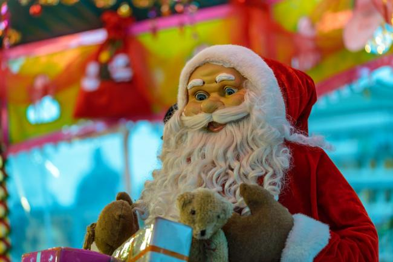
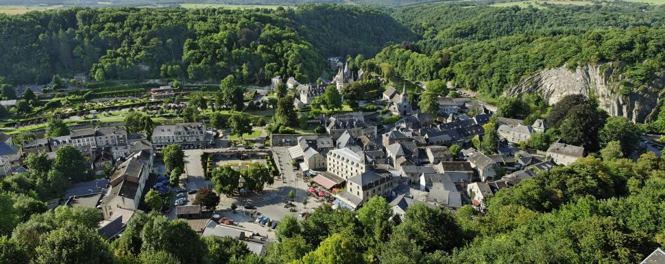
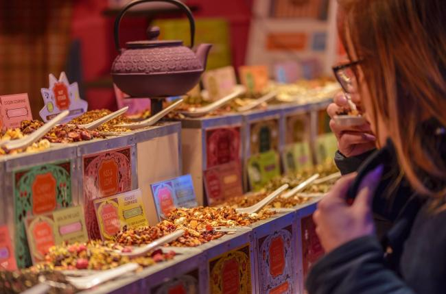
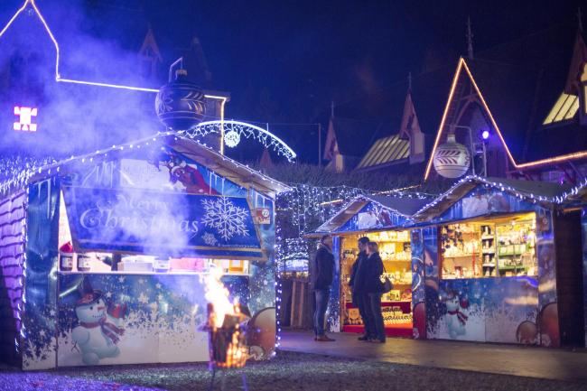
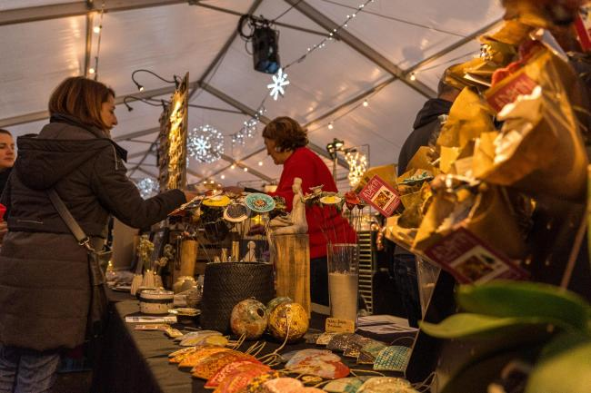
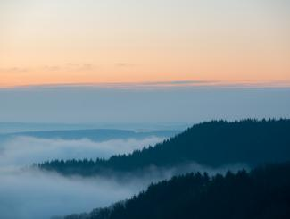
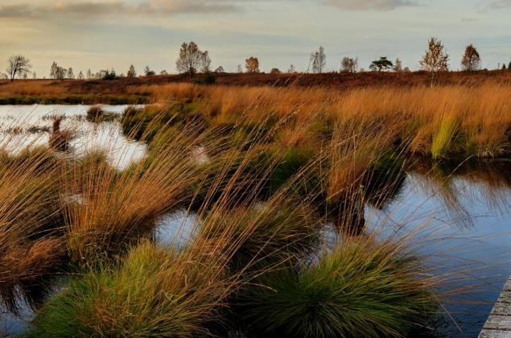

De grootste
Luik
Het Village de Noël van Luik is de grootste kerstmarkt van de streek — chalets, ijspiste en Luikse wafels.
Ardennen · Seizoen
Vanaf eind november veranderen de stadjes tussen Maas en Ourthe in kerstdorpen: houten kraampjes, glühwein, streekproducten en lichtjes tegen de vroege avond.
In het kort
De grootste kerstmarkt van het gebied vind je in Luik, de meest magische in het middeleeuwse Durbuy. Daartussen liggen tientallen kleinere markten — van de abdij van Maredsous tot Dinant, waar de kraampjes langs het water staan. De meeste markten openen eind november en lopen tot begin januari.
De klassiekers

Het Village de Noël van Luik is de grootste kerstmarkt van de streek — chalets, ijspiste en Luikse wafels.

De kleinste stad ter wereld in kerstsfeer: lichtjes tegen middeleeuwse gevels.

Kraampjes over de pleinen van de binnenstad, onder de citadel.

Kerst op het erf van de abdij, met bier en kaas van de paters.

Klein, ambachtelijk en helemaal van het dorp — streekproducten eerst.

Aan de Franse kant van het gebied: kerst op het monumentale Place Ducale.
De volledige lijst — met Eupen (de oudste), Arlon, Wiltz, Ciney en meer — en de actuele data per markt vult de redactie aan zodra de edities bevestigd zijn.
Maak er een weekend van
Combineer een marktbezoek met een winterwandeling door berijpte bossen en een nacht in een verwarmde boshut. December is het moment waarop de Ardennen op hun knust zijn.

Praktisch
Ja — de kerstmarkt van Durbuy staat bekend als de meest magische van de Ardennen: kraampjes en lichtjes in het middeleeuwse hart van de kleinste stad ter wereld.
De eerste markten openen eind november; de meeste lopen door tot begin januari. De grootste drukte valt in de weekends van december.
Voor de schaal: Luik. Voor de sfeer: Durbuy en Maredsous. Voor het lokale karakter: Léglise. Wie aan de Franse kant zit, kiest de Place Ducale van Charleville-Mézières.